1
All of the following statements
accurately characterize the relief
sculpture shown below,
EXCEPT:

Choose one answer.
| a. It was carved by Donatello. | ||
| b. It was made in the first half of the fourteenth century. | ||
| c. It represents the industry of sculpture. | ||
| d. It can be considered an expression of the willingness to elevate the status of the artist. | ||
| e. It was made for the bell tower of the cathedral of Florence. |
Question 2
All of the following statements
accurately describe the painting
shown below, EXCEPT:

Choose one answer.
| a. It was made by Duccio during the Proto-Renaissance. | ||
| b. Compared with Byzantine art, there is more of an emphasis on human emotion and psychology. | ||
| c. The parapet in front of the figures is taken from prototypes gleaned from Byzantine icons. | ||
| d. Both A and B | ||
| e. Both B and C |
Question 3
All of the following statements
accurately describe the painting
shown and its place within art
history, EXCEPT:

Choose one answer.
| a. It represents a “Madonna Enthroned.” | ||
| b. It was painted by Giotto. | ||
| c. It was innovative in its use of a gold background. | ||
| d. The monumentality of the painted figures was innovative at the time of the painting’s creation. | ||
| e. It was innovative in its use of overlapping figures to suggest three-dimensional space. |
Question 4
All of the following statements
accurately describe the structure
shown below, EXCEPT:
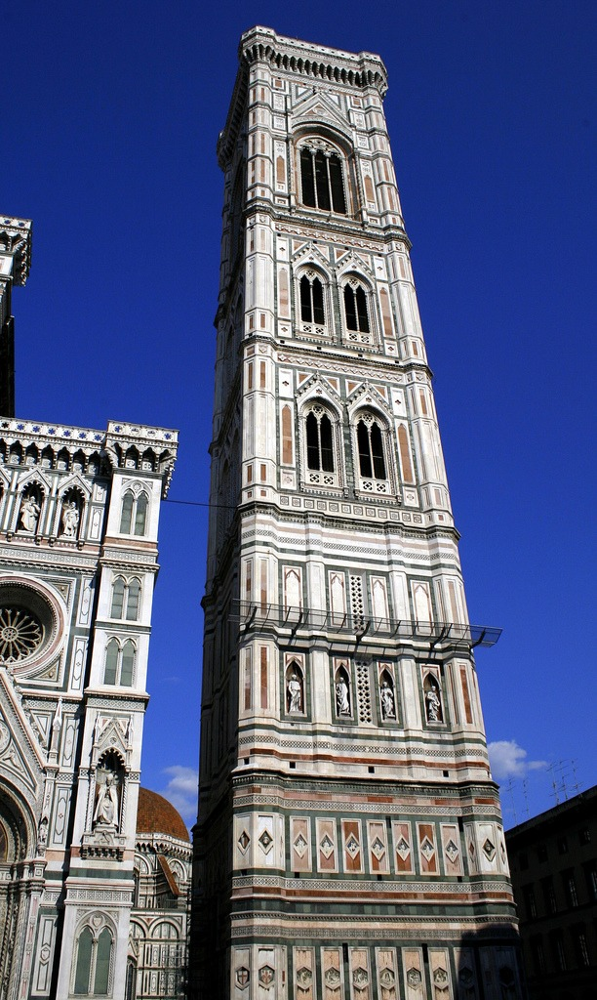
Choose one answer.
| a. It is a baptistery. | ||
| b. It is a bell tower or “campanile.” | ||
| c. It was decorated with reliefs by Pisano. | ||
| d. It is in Florence. | ||
| e. All of the above |
Question 5
For Bernard Smith, which of the
following artists best represents
the first full expression of the
innovations of “Trencento” art?
Choose one answer.
| a. Cimabue and Giotto | ||
| b. Giotto and Duccio | ||
| c. Giotto and Masaccio | ||
| d. Masaccio and Donatello | ||
| e. Giotto and Gentile da Fabriano |
Question 6
How was the Byzantine influence
manifested in certain paintings of
the Proto-Renaissance in Italy?
Choose one answer.
| a. The modeling of figures and clothes with white highlights in some paintings can be seen as taken from Byzantine prototypes. | ||
| b. The representation of folds of cloth rendered through the use of a series of very fine gold lines and the flat gold backgrounds of some paintings can be seen as taken from Byzantine prototypes. | ||
| c. The plasticity and monumentality of the figures in some paintings can be seen as taken from Byzantine prototypes. | ||
| d. Both A and B | ||
| e. Both B and C |
Question 7
In which city-state was this
structure built during the
fourteenth century?

Choose one answer.
| a. Siena | ||
| b. Mantua | ||
| c. Florence | ||
| d. Milan | ||
| e. None of the above |
Question 8
What Byzantine elements are visible
in this painting by
Berlinghiero?
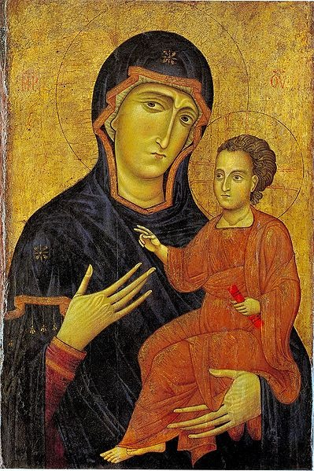
Choose one answer.
| a. The iconography of the Madonna pointing to the child as a way to salvation, or the “Madonna Hodegetria” | ||
| b. The starburst-like motifs on the Madonna’s head and shoulder | ||
| c. The flatness of the Madonna’s hands | ||
| d. The gold background | ||
| e. All of the above |
Question 9
Which of the following accurately
describes the mendicant orders’
impact on art in the late Middle
Ages and early Renaissance?
Choose one answer.
| a. Saint Francis became a common figure in the art of that era. | ||
| b. The travelling friars contributed to the Byzantine influence in devotional images. | ||
| c. The representation of Christ’s physical suffering was avoided in the art of that era. | ||
| d. Both A and B | ||
| e. Both B and C |
Question 10
Which of the following artists is
the best representative of the
“International Gothic Style” in
Italy?
Choose one answer.
| a. Gentile da Fabriano | ||
| b. Duccio | ||
| c. Ambrogio Lorenzetti | ||
| d. Cimabue | ||
| e. Pierro della Francesca |
Question 11
Which of the following statements
about the process of panel painting
in the Proto-Renaissance is true?
Choose one answer.
| a. The support was made with wood planks. | ||
| b. Often, a piece of linen soaked with glue was applied over the panel. | ||
| c. An application of gesso served as a ground for the first drawings. | ||
| d. Before painting, the panel was often gilded with gold leaf. | ||
| e. All of the above |
Question 12
Which of the following statements
accurately characterizes the cycle
of frescos in the Upper Church of
San Francesco at Assisi?
Choose one answer.
| a. It depicts different episodes of the legend of Saint Francis. | ||
| b. The backgrounds to the scenes are devoid of architectural or natural elements. | ||
| c. It was painted by Masaccio. | ||
| d. Both A and B | ||
| e. Both B and C |
Question 13
Which of the following statements
accurately describes the era of the
Italian Renaissance?
Choose one answer.
| a. During the era of the Italian Renaissance, Italy was made up of independent city-states. | ||
| b. The Italian Renaissance was characterized by a new focus on the individual and his/her perfectibility. | ||
| c. The Italian Renaissance mostly affected rural areas. | ||
| d. Both A and B | ||
| e. Both B and C |
Question 14
Which of the following statements
accurately describes the Church in
the Late Middle Ages in Italy and
Europe?
Choose one answer.
| a. The mendicant friars became important spiritual figures. | ||
| b. There was a new focus on a more personal relationship with God. | ||
| c. The Papacy lost some of its spiritual dominance. | ||
| d. All of the above | ||
| e. None of the above |
Question 15
Which of the following statements
accurately describes the
innovations of “Trencento” art,
according to Bernard Smith?
Choose one answer.
| a. They were mostly based on Byzantine prototypes. | ||
| b. They included a move toward greater naturalism, tactile value, plasticity, and volume within the representation of figures or things. | ||
| c. They were encouraged in part by the willingness to produce narrative art. | ||
| d. Both A and B | ||
| e. Both B and C |
Question 16
Which of the following statements
accurately describes the
“International Gothic style”?
Choose one answer.
| a. Paintings in the “International Gothic style” tend not to display much surface detail in the representation of landscapes or costumes. | ||
| b. Paintings in the “International Gothic style” tend to create an illusionistic deep space. | ||
| c. Paintings in the “International Gothic style” tend to show elegant, rather than sculptural, figures. | ||
| d. Both A and B | ||
| e. Both B and C |
Question 17
Which of the following statements
accurately describes Florence
during the Proto Renaissance?
Choose one answer.
| a. During the thirteenth century, church building by the mendicants had a great impact on the city-scape of Florence. | ||
| b. Florence was the site of great demographic and economic expansion in the thirteenth century. | ||
| c. During the fourteenth century, a period of peace led to an accelerated pace in building. | ||
| d. Both A and B | ||
| e. Both B and C |
Question 18
Which of the following statements
accurately describes the fresco
below?
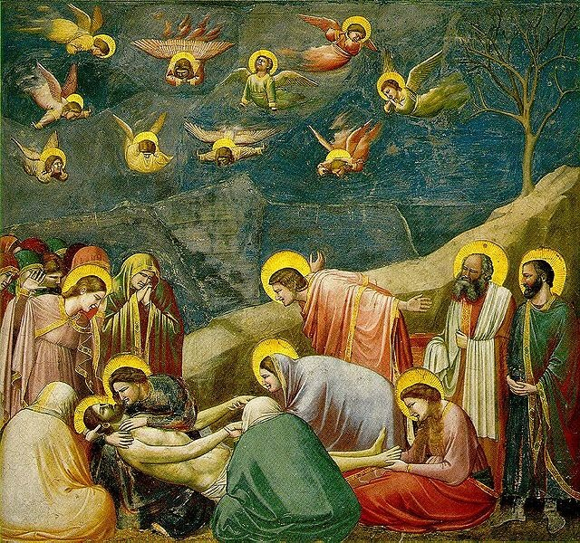
Choose one answer.
| a. It was painted in the Arena Chapel in Padua in the early fourteenth century. | ||
| b. It represents the “Lamentation” of Mary. | ||
| c. It is part of a larger cycle of frescos depicting the life of Christ and the life of Mary. | ||
| d. It was painted by Giotto. | ||
| e. All of the above |
Question 19
Which of the following statements
accurately describes early
Renaissance humanism?
Choose one answer.
| a. Humanists differentiated themselves from certain monastic texts on the lowly and miserable nature of earthly life by emphasizing the beauty and order of nature and man. | ||
| b. Humanists valued civic involvement. | ||
| c. Humanists rediscovered ancient classical texts. | ||
| d. All of the above | ||
| e. None of the above |
Question 20
Which of the following statements
correctly describes the structure
below?
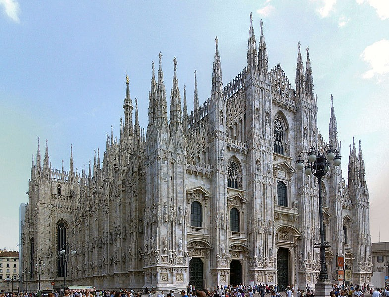
Choose one answer.
| a. It is an example of late Gothic architecture in Italy. | ||
| b. It is located in Florence. | ||
| c. It typifies Italian cathedral architecture of the fourteenth and fifteenth centuries. | ||
| d. All of the above | ||
| e. None of the above |
Question 21
Which of the following statements
does NOT accurately describe
Sienese painting of the
Proto-Renaissance?
Choose one answer.
| a. It was much influenced by the style of Duccio. | ||
| b. Overall, it tended to be more realistic in style than Florentine painting. | ||
| c. The most characteristic representative of the “International Gothic style” in Siena was Simone Martini. | ||
| d. The artists who most characteristically incorporated innovations in the treatment of space in Siena were the Lorenzetti brothers. | ||
| e. All of the above |
Question 22
Which of the following statements
does NOT describe the mendicant
orders?
Choose one answer.
| a. The Franciscans and Dominicans were important mendicant orders. | ||
| b. They vowed to poverty. | ||
| c. To survive, they depended upon their listeners or followers. | ||
| d. They stayed in seclusion from society. | ||
| e. Some orders tried to imitate Christ and draw attention to his physical suffering. |
Question 23
Which of the following statements
is true of the painting
shown?
Choose one answer.
| a. It was painted by Cimabue. | ||
| b. It represents the death of St. Francis. | ||
| c. It was innovative in its treatment of space, because it made use of a normal eye-level in its lower portion. | ||
| d. It was one of the first oil on canvas paintings. | ||
| e. None of the above |
Question 24
Which political units became the
largest and most important in Italy
over the course of the fourteenth
and fifteenth centuries?
Choose one answer.
| a. The city-states of Rome and Florence, and the kingdom of Sicily | ||
| b. The city-states of Florence, Venice, and Milan; the kingdoms of Naples and Sicily; and the Papal States | ||
| c. The city-states of Padua, Genoa, and Florence, and the Papal States | ||
| d. The city-states of Rome and Mantua, and the kingdom of Naples | ||
| e. None of the above |
Question 25
Which of the following statements
accurately characterizes thirteenth
and fourteenth-century Italian
society?
Choose one answer.
| a. In the thirteenth century, Florence was the center of a small empire. | ||
| b. For most of the fourteenth century, there was a pope in Avignon, France, as well as in Rome. | ||
| c. The Black Death killed tens of thousands of people in the fourteenth century. | ||
| d. Both A and B | ||
| e. Both B and C |
Question 26
According to Elizabeth Lev, what
are some of the specific ways in
which art production and the use of
classical prototypes to create
Christian art were justified by
actors of early Christianity and
the Renaissance?
Choose one answer.
| a. From the beginning, in the fourth and fifth centuries, the justification of Christian art had been to make manifest, show that God had been made man (through Jesus Christ), using Classical prototypes compatible with Christian ideals, such as the “Good Shepherd,” or the face of Apollo that could signify divinity. | ||
| b. Although Brunelleschi studied the work and engineering of ancient architects to design a dome for the Cathedral of Florence, he repurposed them in a dome that was not Roman in form and that served the function of celebrating Mary. | ||
| c. Although Donatello studied ancient nude statuary to create figures that had corporeality, he never sculpted a nude figure. | ||
| d. Both A and B | ||
| e. Both B and C |
Question 27
All of the following accurately
characterize the sculpture shown
below, EXCEPT:
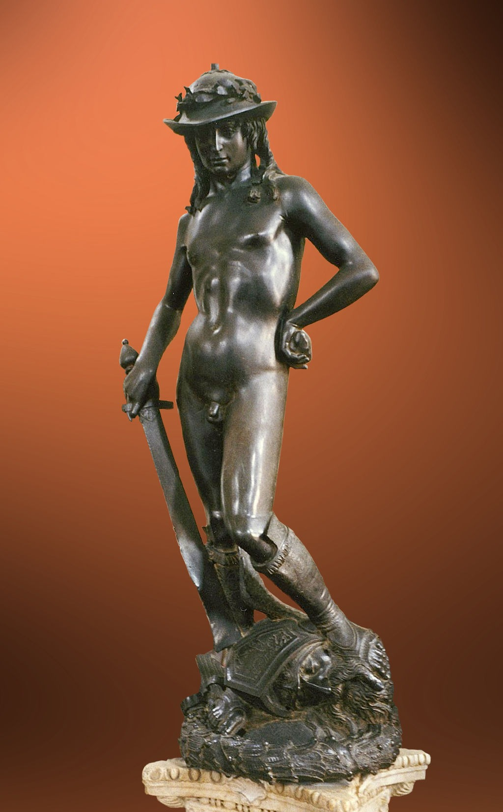
Choose one answer.
| a. It was made by Donatello. | ||
| b. It represents David, victorious over Goliath. | ||
| c. It was conceived for a niche of the Cathedral of Florence. | ||
| d. It was the first free-standing nude sculpted figure since classical antiquity. | ||
| e. The figure is depicted in a “contrapposto” position. |
Question 28
All of the following statements
accurately describe the painting
shown below, EXCEPT:

Choose one answer.
| a. It is a fresco by Masaccio. | ||
| b. It depicts the “Holy Trinity.” | ||
| c. It incorporates figures of contemporary donors. | ||
| d. It displays the use of aerial perspective. | ||
| e. It incorporates certain elements taken from the material culture of Roman antiquity. |
Question 29
All of the following statements
accurately describe the artist
Antonello da Messina, EXCEPT:
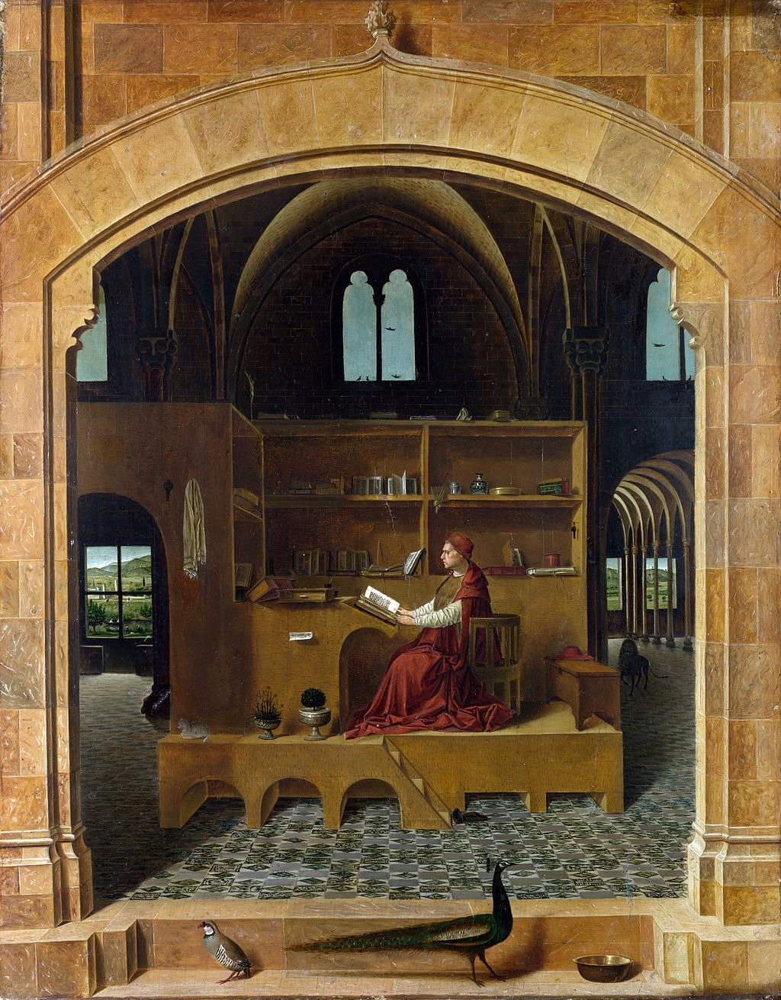
Choose one answer.
| a. He was influenced by Flemish and Netherlandish artists. | ||
| b. He was a Venetian painter. | ||
| c. He painted the “Saint Jerome in His Study” above. | ||
| d. Structure, geometry, light, and tone as visual elements of art, can be said to have been particularly mastered in the later work of this artist. | ||
| e. In his later works, the backgrounds to his scenes were generally devoid of details. |
Question 30
What are some ways by which artists
of the “Quattrocento” incorporated
their rediscovery of classical
antiquity into their artwork?
Choose one answer.
| a. Painters sometimes placed their painted narratives in architectural settings displaying ancient classical features, such as rounded arches. | ||
| b. Painters sometimes incorporated classical motifs gleaned from Roman sculptures or cameos into their artworks. | ||
| c. The nude free-standing sculpture made its reappearance in “Quattrocento” Italy. | ||
| d. Artists developed ways to better represent three-dimensional space on a two-dimensional surface. | ||
| e. All of the above |
Question 31
Which fifteenth-century painter is
usually considered to have been the
first to use true linear
perspective to create an
illusionistic space on a
two-dimensional surface?
Choose one answer.
| a. Giotto | ||
| b. Masaccio | ||
| c. Leonardo da Vinci | ||
| d. Fra Filippo Lippi | ||
| e. Sandro Boticelli |
Question 32
Which of the following does NOT
accurately describe the 1401
competition to decorate the
Florence Baptistery doors and
Ghiberti and Brunelleschi's
submissions to this
competition?
Choose one answer.
| a. In the competition guidelines, it was stated that the artist needed to show knowledge of Antiquity. | ||
| b. The subject-matter of Ghiberti and Brunelleschi’s submissions was “The Sacrifice of Isaac.” | ||
| c. They both used classical Roman prototypes to represent the nude body or torso. | ||
| d. The winning Ghiberti relief was the one that departed most from the elegant lines of the Gothic tradition. | ||
| e. The winning Ghiberti relief was cast from one single piece of bronze and was much lighter than Brunelleschi's. |
Question 33
Which of the following figures was
the first to develop linear
perspective?
Choose one answer.
| a. Andrea Mantegna | ||
| b. Giotto | ||
| c. Filippo Brunelleschi | ||
| d. Lorenzo Ghiberti | ||
| e. Fra Angelico |
Question 34
Which of the following statements
about Alberti and his work is
false?
Choose one answer.
| a. He was an architect and art theorist. | ||
| b. He incorporated Roman temple and triumphal arch motifs into the design of Sant’ Andrea in Mantua. | ||
| c. His façade of Basilica of Santa Maria Novella in Florence is treated as a reflection of the interior space it encloses. | ||
| d. All of the above | ||
| e. None of the above |
Question 35
Which of the following statements
about early Renaissance painting in
Venice is false?
Choose one answer.
| a. In a general sense and compared to painting in other regions, it is distinguished by its colors and rendition of light. | ||
| b. Because of its links to the east, compared to Florentine painting, Venetian painting held on to its Byzantine heritage longer. | ||
| c. Through links with Northern Europe, Venetian painters were introduced to oil painting. | ||
| d. Giovanni Bellini was an important Venetian painter in the later fifteenth century. | ||
| e. Sandro Boticelli was an important Venetian painter in the later fifteenth century. |
Question 36
Which of the following statements
about Nanni di Banco’s “Four
Crowned Martyrs” is true?
Choose one answer.
| a. It was created for the stone and wood worker’s guild’s niche at Orsanmichele, in Florence. | ||
| b. It represents sculptors who became Christian martyrs for refusing to sculpt a Roman deity. | ||
| c. The sculpted figures seem weightless, as if to signify their spiritual nature, and they hold the symbol of martyrdom: a palm leaf. | ||
| d. A and B | ||
| e. B and C |
Question 37
Which of the following statements
about Sienese painting in the 1400s
is false?
Choose one answer.
| a. Compared to Florentine painting, it was more medieval in style. | ||
| b. It was influenced by the innovations taking place in Florence. | ||
| c. The influence of Duccio and Simone Martini can be identified in the 1400s. | ||
| d. Many images were made of the Virgin, because she was Siena’s patron saint. | ||
| e. Fra Angelico is an important representative of fifteenth-century Sienese art. |
Question 38
Which of the following statements
accurately describes the influence
of the papacy during the fifteenth
and early sixteenth centuries?
Choose one answer.
| a. Popes were increasingly seen as the promoters of humility and renunciation of “worldly” pursuits. | ||
| b. Popes sometimes took part in “worldly” matters and collected ancient art. | ||
| c. During the fifteenth century, Rome again became the seat of the papacy. | ||
| d. Both A and B | ||
| e. Both B and C |
Question 39
Which of the following statements
accurately describes linear
perspective?
Choose one answer.
| a. When it is used in painting, it depicts space as seen from multiple points of view. | ||
| b. In linear perspective, orthogonals merge at a vanishing point. | ||
| c. In linear perspective, the vanishing point is on the horizon line. | ||
| d. Both A and B | ||
| e. Both B and C |
Question 40
Which of the following statements
accurately describes the structure
below?

Choose one answer.
| a. It was built for Cosimo Medici (Cosimo Vecchio) by Michelozzo. | ||
| b. It was partly defensive in nature. | ||
| c. It had a rusticated first story, imposing cornice, and interior court. | ||
| d. Its private spaces displayed more wealth than its public ones. | ||
| e. All of the above |
Question 41
Which of the following statements
accurately describes Fra Angelico’s
contribution to the history of art?
Choose one answer.
| a. He represents the full expression of the “International Gothic style.” | ||
| b. He is known as the first painter to effectively use linear perspective to create an illusionistic space on a two-dimensional surface. | ||
| c. He was one of the early Renaissance innovators for treatment of space as well as for the arrangement and modeling of figures. | ||
| d. Both A and B | ||
| e. Both B and C |
Question 42
Which of the following statements
accurately describes the painting
below?

Choose one answer.
| a. The general “softness” of the image, for example the soft, delicate and curvilinear lines of the Madonna’s veil, show Masaccio’s influence on the artist. | ||
| b. It was painted by Fra Fillipo Lippi in the mid-fifteenth century. | ||
| c. Compared to medieval examples, the painting displays more willingness to reproduce elements of the visible world faithfully. | ||
| d. Both A and B | ||
| e. Both B and C |
Question 43
Which of the following statements
best describes the painting
below?

Choose one answer.
| a. It was painted by Bellini. | ||
| b. It represents a “Dead Christ.” | ||
| c. It makes use of exact mathematical linear perspective to for-shorten the represented body. | ||
| d. Both A and B | ||
| e. Both B and C |
Question 44
Which of the following statements
correctly describes Platonism or
Renaissance Platonism?
Choose one answer.
| a. It is founded on the figure of Plato, whose fundamental philosophy rested on the perceived superiority of empirical knowledge. | ||
| b. It is founded on the figure of Plato, who believed that true knowledge was to be gleaned from a world of eternal forms rather than from the visible world. | ||
| c. It developed into a widely taught and disseminated study program during the fifteenth century. | ||
| d. Both A and B | ||
| e. Both B and C |
Question 45
Which of the following statements
does NOT accurately describe the
dome of the Cathedral of Florence
and its construction?
Choose one answer.
| a. It was designed by Alberti. | ||
| b. It was larger than any dome that had been constructed previously. | ||
| c. Its construction began in the early fifteenth century. | ||
| d. It has a herringbone pattern. | ||
| e. It is not a completely rounded dome. |
Question 46
Which of the following statements
does NOT accurately describe
Florence in the Early Renaissance?
Choose one answer.
| a. All segments of society could participate in government. | ||
| b. Florence was a republic in which the nobility had limited power. | ||
| c. During the early fifteenth century, Florence accumulated a few victories against the military of other Italian kings and dukes. | ||
| d. Florentines tended to see their city as a new, Christian, Rome. | ||
| e. Florence became the cradle of the artistic Renaissance. |
Question 47
Which of the following statements
fairly characterizes Andrea
Mantegna and his art?
Choose one answer.
| a. According to Keith Christiansen, he achieved extraordinary status as an artist, and thus helped change the way by which artistic genius was measured during the Renaissance as well as change the status of the artist itself. | ||
| b. He painted a ceiling fresco, “Camera degli Sposi,” that shows an elaborate illusionistic architecture. | ||
| c. He painted a “Saint Sebastian,” now conserved in Vienna, in which a martyr is taking place in front of a church. | ||
| d. Both A and B | ||
| e. Both B and C |
Question 48
Which of the following statements
fairly describes the painting
below?
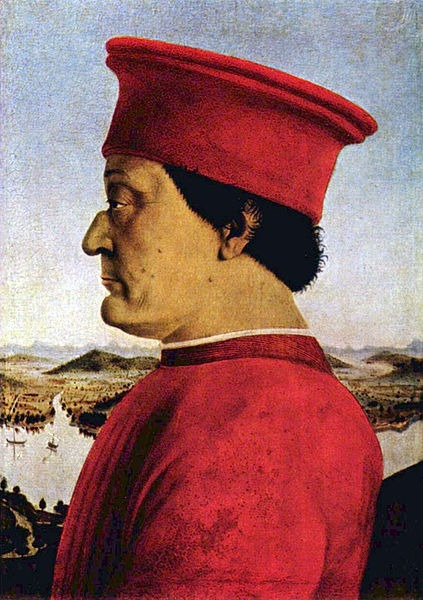
Choose one answer.
| a. It represents a member of the Medici family painted by Fra Fillipo Lippi. | ||
| b. It is a manifestation of the reemergence of portrait art and the emphasis on individuality in the Renaissance. | ||
| c. It is part of a double portrait in which the portrait of the figure’s wife is facing it. | ||
| d. Both A and B | ||
| e. Both B and C |
Question 49
Which of the following statements
is true of Venetian architecture of
the fifteenth century?
Choose one answer.
| a. For most of the century, Venetian architecture had a distinctive style, in which oriental, Veneto-Byzantine, and Gothic influences cohabitated. | ||
| b. Early on, Venetian architects tried to rival the “innovative reemergence” of the classical tradition in the architecture of Florence and build classical structures. | ||
| c. There was a strong Gothic influence but only in church construction. | ||
| d. Though the Venetians were inspired by the architectural Renaissance taking place in Florence, lack of prosperity in the early fifteenth century made the undertaking of large construction projects dwindle. | ||
| e. None of the above |
Question 50
Which of the following statements
accurately explains why it is
argued that the Renaissance began
in the Italian city-states? A. The
Renaissance began in Italy, because
it was the location where ancient
Roman remains were.
Choose one answer.
| a. With their position in between east and west, the Italian city-states became the site of trade, mercantilism, exchange of knowledge, and the development of a new wealthy class that could pursue knowledge and fund artistic endeavors. | ||
| b. The Renaissance began in Italy, because the printing press and movable type were invented there. | ||
| c. Both A and B | ||
| d. Both B and C |
Question 51
According to John Freed, why does
Michelangelo’s “David” embody the
shift from the medieval to the
early modern world when compared to
Donatello’s “David”?
Choose one answer.
| a. Because of its greater anatomical realism | ||
| b. Because Donatello’s “David” is clothed, while Michelangelo’s “David” is nude | ||
| c. Because Michelangelo’s “David” speaks more of Michelangelo than of “David” | ||
| d. All of the above | ||
| e. None of the above |
Question 52
All of the following are considered
to be characteristics or ideals of
High Renaissance art in Italy,
EXCEPT:
Choose one answer.
| a. A focus on human psychology and interrelations in painting. | ||
| b. A new interest for irrational space. | ||
| c. An interest for the “natural” and naturalism. | ||
| d. Careful compositions based on ideal geometric forms. | ||
| e. An interest in human anatomy. |
Question 53
All of the following statements
accurately describe the painting
shown, EXCEPT:

Choose one answer.
| a. It represents the Virgin Mary, John the Baptist, Christ, and an archangel. | ||
| b. It was painted by Leonardo da Vinci during the High Renaissance. | ||
| c. The garden and the water, as well as being depicted in a way that is very close to nature, could symbolize the Virgin’s purity. | ||
| d. The “sfumato” technique used tends to soften the image. | ||
| e. Although the background shows a lot of detail, Leonardo did not use atmospheric perspective. |
Question 54
All of the following statements
accurately describe the painting
shown below, EXCEPT:
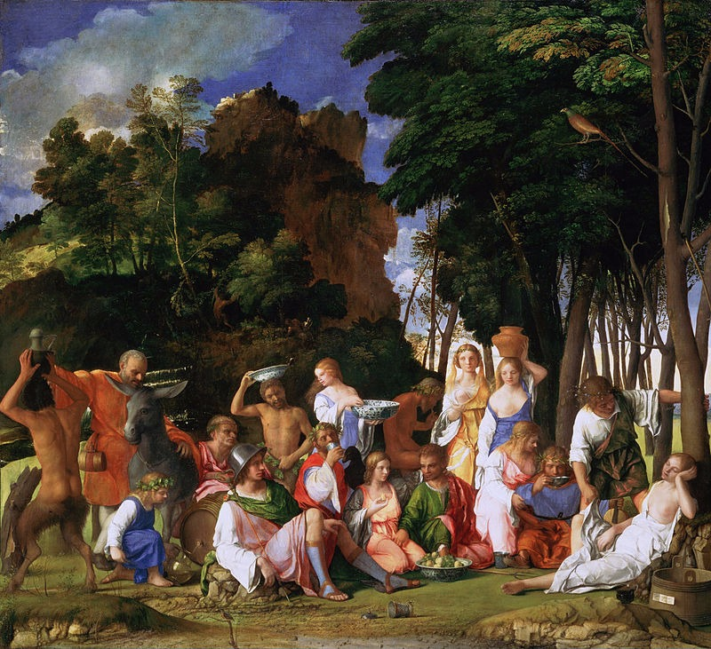
Choose one answer.
| a. It was painted by Bellini and Titian. | ||
| b. It represents a “Feast of the Gods” in which Priapus, the God of virility, was humiliated after trying to lift a nymph’s skirt. | ||
| c. Priapus is the figure near the center, wearing the green robe. | ||
| d. Both A and B | ||
| e. Both B and C |
Question 55
All of the following statements
correctly describe Palladio,
EXCEPT:
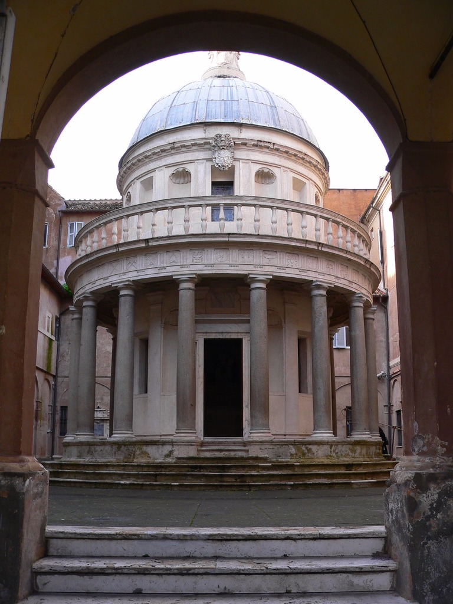
Choose one answer.
| a. He was the architect who designed the “Tempietto,” pictured above. | ||
| b. He wrote a treatise on architecture that contained practical advice for architects. | ||
| c. He was a Venetian architect. | ||
| d. He built villas that were symmetric in plan. | ||
| e. He built churches that featured temple front designs. |
Question 56
In what way was Leonardo da Vinci’s
“Mona Lisa” innovative?
Choose one answer.
| a. It was innovative, because da Vinci was more interested in the perceived physical flaws of the sitter than in her perceived beauty. | ||
| b. It was innovative in that the focus was less on the status of the sitter and more on her personality when compared to portraits of the era. | ||
| c. It was innovative, because in the early Renaissance, portraits were usually done in profile, and the arms and hands were usually cut off. | ||
| d. Both A and B | ||
| e. Both B and C |
Question 57
In what ways can one distinguish
the styles of Michelangelo,
Leonardo da Vinci, and Raphael?
Choose one answer.
| a. Unlike da Vinci and Raphael, Michelangelo, first and foremost a sculptor, tended to emphasize the musculature of his figures, and more generally, the linear and the sculptural. | ||
| b. Raphael was influenced by the style of Leonardo da Vinci; he created very harmonious compositions, but in general, the colors he used were darker than da Vinci’s, and he created hazier, unclear atmospheres than Leonardo da Vinci. | ||
| c. Leonardo da Vinci created very harmonious compositions based on geometrical forms in which figures interrelate with one another, but compared to Raphael and Michelangelo, he used much lighter colors and created images with clearer outlines. | ||
| d. All of the above | ||
| e. None of the above |
Question 58
Which architect designed the
structure below?

Choose one answer.
| a. Palladio | ||
| b. Alberti | ||
| c. Michelangelo | ||
| d. Sansovino | ||
| e. Bramante |
Question 59
Which of the following accurately
characterizes the “School of
Athens” painted by Raphael?
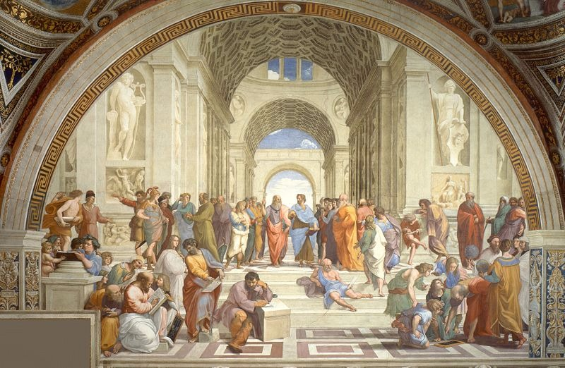
Choose one answer.
| a. It shows Leonardo da Vinci, Michelangelo, and Bramante’s traits, in the guise of ancient artists of Greece. | ||
| b. According to Timothy Verdon, because it was more important in its original context than the “Disputa del Sacramento,” it was seen first when one entered into the space enclosing the two frescoes. | ||
| c. According to Timothy Verdon, “School of Athens” and the “Disputa del Sacramento” both show figures moving toward the viewer of the artworks. | ||
| d. It symbolically placed the viewer entering the space enclosing it and the “Disputa del Sacramento” in a grand procession, taking its roots in classical Antiquity and moving toward the kingdom of God. | ||
| e. All of the above |
Question 60
Which of the following statements
about the painter Giorgione is
false?

Choose one answer.
| a. The Venetian High Renaissance began with Giorgione’s work. | ||
| b. It can be argued that Giorgione, like other Venetian artists, focused more on color, textural effects, and representing the surface of things, and focused less on structure than artists in Central Italy. | ||
| c. Among other things, he painted mythological scenes and pastorals. | ||
| d. He painted the “Assumption of the Virgin,” pictured above. | ||
| e. He was innovative and intuitive in his painting techniques; he liked to use canvas and he did not make detailed preparatory drawings. |
Question 61
Which of the following statements
accurately describes the “Lives of
the Artists”?
Choose one answer.
| a. Though this treatise retraces the stylistic development of many artists, it generally gives no clue as to each artist as a person and personality. | ||
| b. This book was written by Vasari in the sixteenth century. | ||
| c. It was written to immortalize and tell the lives of artists and thus is a testimonial to the changing status of the artist and the individual. | ||
| d. Both A and B | ||
| e. Both B and C |
Question 62
Which of the following statements
accurately describes the painting
below?

Choose one answer.
| a. It is an oil painting on canvas by Raphael. | ||
| b. It depicts the “Last Supper” with Christ in the center at the vanishing point. | ||
| c. In this painting, and as is characteristic of High Renaissance art, the focus on depicting objects and architecture realistically tends to eclipse spiritual symbolism to an afterthought. | ||
| d. Judas is the figure to Christ’s left, wearing green. | ||
| e. It was painted for the Duke of Milan’s palace. |
Question 63
Which of the following statements
accurately describes this sculpture
of Moses by Michelangelo?

Choose one answer.
| a. It was to be part of Pope Julius II’s tomb. | ||
| b. His transitional position (he seems about to rise) can be seen as characteristic of Michelangelo’s art. | ||
| c. His pronounced musculature can be seen as characteristic of Michelangelo’s style. | ||
| d. The complex positioning of Moses can be seen as characteristic of High Renaissance art. | ||
| e. All of the above |
Question 64
Which of the following statements
accurately describes the “School of
Athens” painted by Raphael?
Choose one answer.
| a. It was painted for the library of Pope Julius II. | ||
| b. The two central figures are Plato and Aristotle. | ||
| c. It represents “poetry,” while other frescos in the same room represent other areas of human knowledge (namely theology, jurisprudence, and philosophy). | ||
| d. Both A and B | ||
| e. Both A and C |
Question 65
Which of the following statements
accurately describes the “Disputa
del Sacramento” painted by
Raphael?
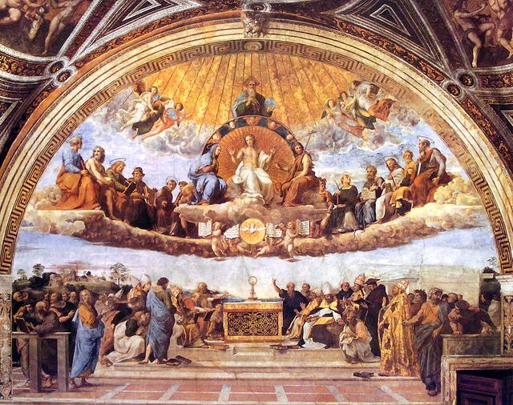
Choose one answer.
| a. It was painted for the library of Pope Julius II and represents theology. | ||
| b. According to Robert Baldwin, it reasserts the authority of the pope. | ||
| c. C. According to Robert Balwin, it justifies Catholic Church dogma and sacraments as divine in origin. | ||
| d. According to Robert Baldwin, Raphael deliberately contrasted figures of emotional lay people against the calm and knowledgeable figures of theologians. | ||
| e. All of the above |
Question 66
Which of the following statements
accurately describes
sixteenth-century painters and
painting in Venice and the Veneto?
Choose one answer.
| a. Titian and Veronese, two important forces for sixteenth-century painting in Venice, were known for their striking use of color. | ||
| b. Compared to Florentine painting, Venetian painting was known to emphasize the linear aspect of figures and scenes more. | ||
| c. Tintoretto, an important force for sixteenth-century art in Venice, was known for his very tight, almost invisible brushstroke. | ||
| d. Both A and B | ||
| e. Both B and C |
Question 67
Which of the following statements
accurately describes the work of
the architect Jacopo
Sansovino?

Choose one answer.
| a. He studied Roman and classical architecture and incorporated Roman/classical motifs into Venetian architecture. | ||
| b. He was popular in Venice because of the desire to make Venice a new Rome and dominate the Mediterranean. | ||
| c. In his “Loggetta” pictured above, stones from faraway places were used to show and suggest wealth. | ||
| d. All of the above | ||
| e. None of the above |
Question 68
Which of the following statements
accurately describes Michelangelo’s
work on the ceiling of the Sistine
Chapel beside St. Peter’s in Rome?
Choose one answer.
| a. The realization of the painting of the ceiling was a great challenge to Michelangelo, because he considered himself more of a sculptor, he had to be on a scaffolding in an uncomfortable position, and the ceiling is curved. | ||
| b. The painting on the ceiling is done in fresco. | ||
| c. The ceiling features many biblical scenes separated by illusionistic painted stonework. | ||
| d. In the ceiling decoration, he uses figures from classical Antiquity, the Sybills. | ||
| e. All of the above. |
Question 69
Which of the following statements
best describes how Renaissance
artists studied and illustrated the
human anatomy?
Choose one answer.
| a. Pollaiuolo, Leonardo da Vinci, Michelangelo, and other artists performed anatomical dissections and incorporated their discoveries into the representation of the human figure. | ||
| b. Some artists printed studies of the human body devoid of skin, or the human skeleton and developed anatomical illustrations. | ||
| c. Leonardo da Vinci borrowed from the architect to illustrate the make-up of the human body by representing human forms in elevation, section, plan, and perspectival view. | ||
| d. All of the above | ||
| e. None of the above |
Question 70
Which of the following statements
best describes the debate that took
place between artists and theorists
who thought “disegno” was the most
important in representing nature
and those who thought “colorito”
was?
Choose one answer.
| a. While in Florence, color and its ingenious application were judged of prime importance to render nature life-like, Venetians thought that drawing was the only indispensable facet of an artwork that aimed to render nature well. | ||
| b. While in Venice, color and its ingenious application were judged of prime importance to render nature life-like, Florentines thought that drawing was the most important aspect of an artwork that could render nature well. | ||
| c. Vasari thought that color was the foundation of art. | ||
| d. Artists who thought color was of more fundamental importance usually made more preparatory studies. | ||
| e. Artists who thought drawing was of more fundamental experience often painted directly on the canvas, without preparatory studies. |
Question 71
Who are some of the most important
protagonists of the High
Renaissance in Italy?
Choose one answer.
| a. Michelangelo, Leonardo da Vinci, Raphael, and Bramante | ||
| b. Masaccio, Fra Angelico, Alberti, and Brunelleschi | ||
| c. Giotto, Duccio, and Cimabue. | ||
| d. Both A and B | ||
| e. Both B and C |
Question 72
Who created the painting
below?
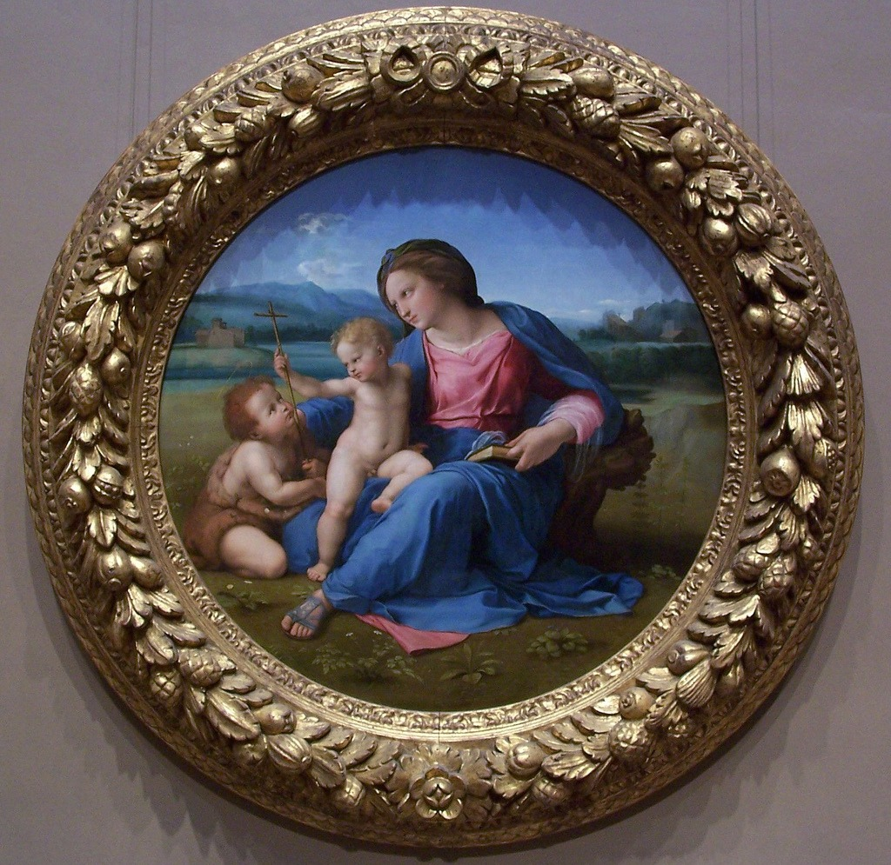
Choose one answer.
| a. Raphael | ||
| b. Michelangelo | ||
| c. Leonardo da Vinci | ||
| d. Titian | ||
| e. Veronese |
Question 73
Who was the first architect to work
for Julius II on St. Peter’s Church
in Rome?
Choose one answer.
| a. Michelangelo | ||
| b. Bramante | ||
| c. Palladio | ||
| d. Alberti | ||
| e. Bernini |
Question 74
Who was Titian?
Choose one answer.
| a. One of the most important Roman artists of the sixteenth century. | ||
| b. A painter known, among other things, for his use of color, his painterly style, and his poetic landscapes. | ||
| c. A painter who painted the “Assumption of the Virgin” above. | ||
| d. Both A and B | ||
| e. Both B and C |
Question 75
How did the Reformation and
Counter-Reformation define the role
of art in the Church?
Choose one answer.
| a. For the protagonists of the Reformation, there was no place for art in the Church. | ||
| b. For the protagonists of the Reformation, art in the church could violate one of the ten commandments that forbids making idols of God. | ||
| c. For the Counter-Reformation, art in the Church was permitted and valued but was not to be worshipped itself. | ||
| d. All of the above | ||
| e. None of the above |
Question 76
According to Bernard Smith, how can
Leonardo da Vinci’s “Last Supper”
be compared with Tintoretto’s “Last
Supper” of 1592?
Choose one answer.
| a. While Leonardo da Vinci’s “Last Supper” is in the High Renaissance style, Tintoretto’s is Mannerist in style. | ||
| b. Tintoretto’s painting is much more nervous and dramatic than Leonardo Da Vinci’s. | ||
| c. Tintoretto’s scene is very static when compared to Leonardo da Vinci’s. | ||
| d. Both A and B | ||
| e. Both B and C |
Question 77
According to Bernard Smith, what
are the characteristics of
Michelangelo’s Pietà that make it a
good representative of High
Renaissance art by Heinrich
Wöllflin’s definition?
Choose one answer.
| a. Most of its compositional lines point to places outside of itself, opening it up to the space surrounding it. | ||
| b. It is very clear in design. | ||
| c. The body of the Virgin and that of Christ are not perceived as separate entities. | ||
| d. Both A and B | ||
| e. Both B and C |
Question 78
According to Bernard Smith, which
Venetian architect was both a
classicist and a Mannerist
architect?
Choose one answer.
| a. Bramante | ||
| b. Palladio | ||
| c. Sansovino | ||
| d. Brunelleschi | ||
| e. Alberti |
Question 79
According to Bernard Smith, who
could be considered the best
representative of the Mannerist
style in Venice?
Choose one answer.
| a. Titian | ||
| b. Pontormo | ||
| c. Tintoretto | ||
| d. Bronzino | ||
| e. Rosso |
Question 80
All of the following statements
accurately describe the structure
shown, EXCEPT:
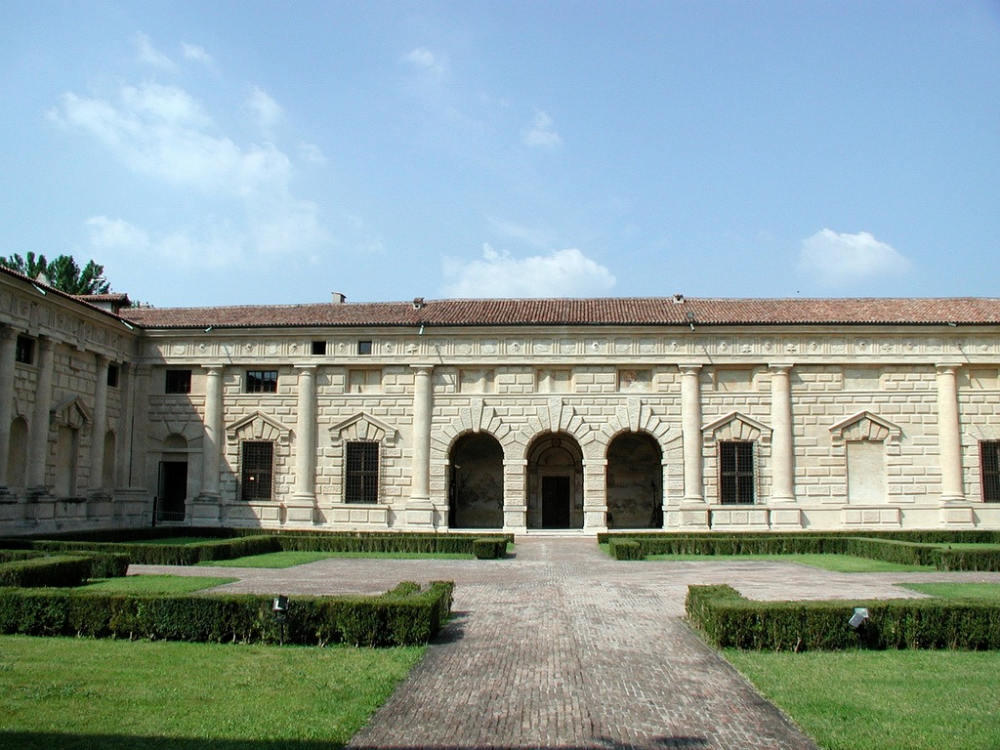
Choose one answer.
| a. It was conceived by Giulio Romano. | ||
| b. It was built as a pleasure and entertainment villa for the Duke of Mantua. | ||
| c. It was built according to the idea that form should follow function. | ||
| d. It violates many classical ideals; for example, the four facades that can be seen from the courtyard are all different. | ||
| e. Compared to structures of the High Renaissance, this structure is not as unified and symmetric. |
Question 81
All of the following statements
accurately describe the
architecture shown, EXCEPT:

Choose one answer.
| a. It was designed by Giulio Romano. | ||
| b. It is part of the Laurentian Library in Florence. | ||
| c. It was mostly conceived under a Medici turned pope. | ||
| d. It displays many architectural elements, such as the volutes, that confuse us as to their potential supportive function. | ||
| e. Its stairway does not feature rails on its sides. |
Question 82
During the early to mid-sixteenth
century, what role did the Medici
fulfill?
Choose one answer.
| a. They were promoting Republican ideals. | ||
| b. A Medici became pope in the early sixteenth century. | ||
| c. They wanted to create a very sophisticated court. | ||
| d. Both A and B | ||
| e. Both B and C |
Question 83
Fill in the blanks. The portrait
shown below was made in the
________________ century, in the
_________________ style.

Choose one answer.
| a. Thirteenth, High Renaissance | ||
| b. Fifteenth, Mannerist | ||
| c. Fifteenth, High Renaissance | ||
| d. Sixteenth, High Renaissance | ||
| e. Sixteenth, Mannerist |
Question 84
How does Giulio Romano’s interior
decoration in the Pallazo del Te
interact with the exterior
treatment of the same palace?
Choose one answer.
| a. Giulio Romano made frescos that display illusionistic architecture. | ||
| b. In the so-called “Hall of Giants,” the dominating depiction of dismantled architecture gives one the sense that the Palazzo del Te is falling. | ||
| c. Though the exterior facades confuse the viewer by their unconventional use of classical elements, the interior can be considered a “refuge” in its ordered and serene painted compositions. | ||
| d. Both A and B | ||
| e. Both C and D |
Question 85
The sixteenth century in Italy was
marked by which of the following?
Choose one answer.
| a. Invasions by foreign entities | ||
| b. The bloody “Sack of Rome” | ||
| c. Disease | ||
| d. All of the above | ||
| e. None of the above |
Question 86
What makes the sculpture, shown
below, a mannerist sculpture?
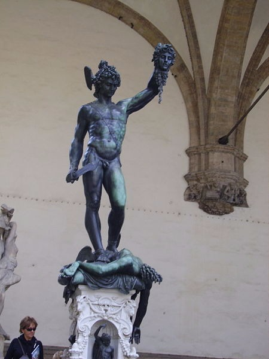
Choose one answer.
| a. It downplays the artist’s skill. | ||
| b. It can be seen in the context of an erudite and intellectual game of cross-referencing in which Michangelo’s neighboring “David” and by extension the Republic of Florence are conquered. | ||
| c. It makes no reference to classical antiquity. | ||
| d. All of the above | ||
| e. None of the above |
Question 87
Which artist made the sculpture
below?

Choose one answer.
| a. Nanni di Banco | ||
| b. Giambologna | ||
| c. Donatello | ||
| d. Michelangelo | ||
| e. Bronzino |
Question 88
Which characteristics of High
Renaissance art did Mannerism turn
away from?
Choose one answer.
| a. The focus on technical virtuosity | ||
| b. Naturalism and rational compositions | ||
| c. Elegant lines and figures | ||
| d. Both A and B | ||
| e. Both B and C |
Question 89
Which of the following accurately
describes Mannerist architects and
architecture?
Choose one answer.
| a. Mannerist architecture creates a sense of confusion as to the function of the architectural devices it uses or displays. | ||
| b. Mannerist architects tried to eradicate any reference to classical prototypes in their designs. | ||
| c. Bramante’s Tempietto is a Mannerist structure. | ||
| d. All of the above | ||
| e. None of the above |
Question 90
Which of the following artworks by
a High Renaissance artist can be
considered to make the transition
into Mannerism?
Choose one answer.
| a. Raphael’s “The School of Athens” | ||
| b. Raphael’s “The Alba Madonna” | ||
| c. Michelangelo’s “The Last Judgment” | ||
| d. Both A and B | ||
| e. Both B and C |
Question 91
Which of the following can be
considered characteristic of
mannerist portraiture?
Choose one answer.
| a. A focus on the sitter’s personality and psychology | ||
| b. A focus on the sitter’s status and sophistication | ||
| c. Dynamism: the sitter is often captured in motion | ||
| d. All of the above | ||
| e. None of the above |
Question 92
Which of the following can be
considered common characteristics
of Mannerist paintings?
Choose one answer.
| a. Elegance | ||
| b. Focus on artificiality | ||
| c. Appeal to all segments of society | ||
| d. Both A and B | ||
| e. Both B and C |
Question 93
Which of the following statements
accurately characterizes Benvenutto
Cellini?

Choose one answer.
| a. He wrote an autobiography in which he gave an exhaustive picture of the historical circumstances of his time, such as the Sack of Rome or the religious battles. | ||
| b. He wrote an autobiography in which he detailed the artistic world of his times and depicted his life as full of adventure and great accomplishments. | ||
| c. He created the sculpture shown above. | ||
| d. Both A and C | ||
| e. Both B and C |
Question 94
Which of the following statements
accurately characterizes the
painting below?

Choose one answer.
| a. It is typically mannerist because of its “S” or serpentine compositional lines. | ||
| b. It is typically mannerist because of its irrational and unnatural sense of scale and proportion. | ||
| c. It is typically mannerist, because Christ’s inevitable death seems to be implied through the figure of the Christ Child. | ||
| d. Both A and B | ||
| e. Both B and C |
Question 95
Which of the following statements
accurately describes the sculpture
below?
Choose one answer.
| a. It is a bronze cast by Benvenutto Cellini for a Medici duke. | ||
| b. The dramatic passed-down story of this sculpture’s casting emphasized the amazing skill of Cellini, who overcame the many difficulties of casting such a complex figure. | ||
| c. It represents Perseus, a figure taken from classical mythology. | ||
| d. All of the above | ||
| e. None of the above |
Question 96
Which of the following statements
is true of Giambologna?
Choose one answer.
| a. He was influenced by Michelangelo. | ||
| b. His bronze sculptures were sometimes used as diplomatic gifts by the Medici. | ||
| c. He made exclusively monumental, large-scale sculptures. | ||
| d. Both A and B | ||
| e. Both B and C |
Question 97
Who created the painting
below?
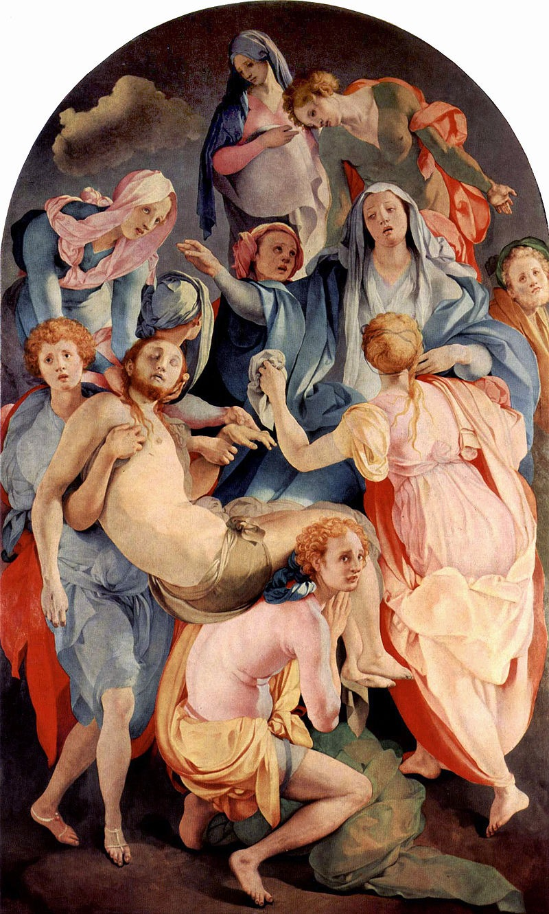
Choose one answer.
| a. Pontormo | ||
| b. Michelangelo | ||
| c. Rosso Fiorentino | ||
| d. Parmigianino | ||
| e. Raphael |
Question 98
Who was dismayed by what he saw in
Rome and the Church in the
sixteenth century, such as
indulgences, and would go on to
become the first leading figure of
the Reformation?
Choose one answer.
| a. Martin Luther | ||
| b. John Calvin | ||
| c. St. Francis of Assisi | ||
| d. Cosimo da Medici | ||
| e. John Knox |
Question 99
Why are Giovanni da Bologna’s
sculptures significant in the
history of art?
Choose one answer.
| a. Because he made sculptures that were not meant to be seen from one point of view, rather his sculptures were intended for a viewer in motion. | ||
| b. He made sculptures using the lost-wax technique. | ||
| c. Because for the first time since Antiquity, he sculpted monumental nude figures. | ||
| d. All of the above | ||
| e. None of the above |
Question 100
According to Peter Levine, which
of the following statements would
describe mannerism well?
Choose one answer.
| a. Mannerist artists were concerned with the issue of style in an artwork. | ||
| b. Mannerist artists were concerned with their own subjectivity and originality. | ||
| c. The development of mannerism was a way to create interest in a very stable and peaceful society. | ||
| d. Both A and B | ||
| e. Both B and C |